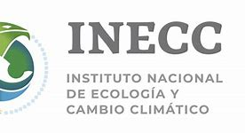
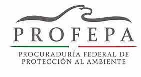
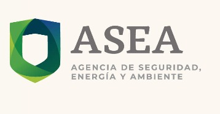
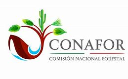

Instituto Nacional de Ecología y Cambio Climático (INECC)
Genera e integra conocimiento técnico y científico e incrementa el capital humano calificado para la formulación, conducción y evaluación de políticas públicas que conlleven a la protección del medio ambiente, preservación y restauración ecológica, crecimiento verde, así como la mitigación y adaptación al cambio climático en el país.
Procuraduría Federal de Protección al Ambiente (PROFEPA)
Tiene como tarea principal incrementar los niveles de observancia de la normatividad ambiental, a fin de contribuir al desarrollo sustentable y hacer cumplir las leyes en materia ambiental.
Agencia de Seguridad, Energía y Ambiente (ASEA)
Órgano administrativo desconcentrado de la Secretaría de Medio Ambiente y Recursos Naturales, con autonomía técnica y de gestión, encargado de regular y supervisar la seguridad industrial, la seguridad operativa y la protección del medio ambiente en las actividades del sector hidrocarburos.
Comisión Nacional Forestal (CONAFOR)
Es un Organismo Público Descentralizado cuyo objetivo es desarrollar, favorecer e impulsar las actividades productivas, de conservación y restauración en materia forestal, así como participar en la formulación de los planes, programas, y en la aplicación de la política de desarrollo forestal sustentable.
